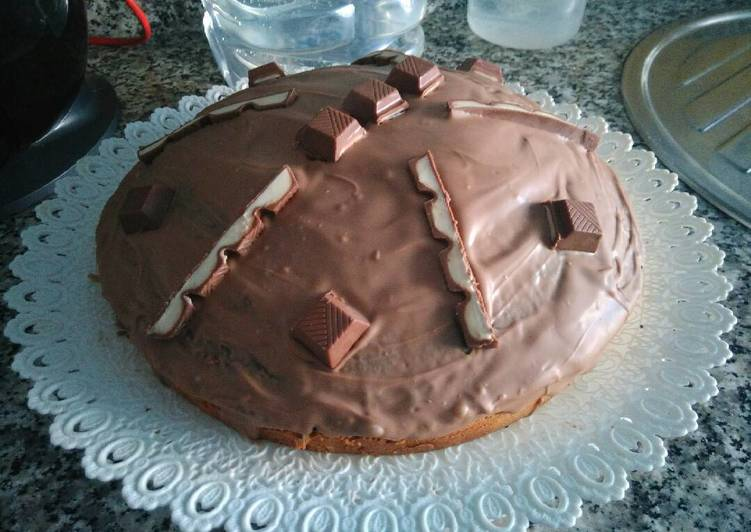

Bizcocho de Kinder
Esta receta está indicada para Chiwos domésticos porque los salvajes comen aves de caza y no se para a comer bizcochos caseros. Un saludo mis cracks. <3
Ingredientes:
- 5 huevos
- 150 gr. azúcar moreno
- 80 cl. leche
- 90 gr. mantequilla (para derretir)
- 250 gr. harina
- 1 sobre levadura
- 1 pizca sal
- 120 gr. barritas Kinder para la mezcla
- 150 gr. barritas Kinder para decorar

Preparación:
- Derretimos la mantequilla y mezclamos todo: huevos, azúcar moreno, leche, mantequilla (ya derretida), harina, levadura y sal.
- Derretimos los 120gr. de barritas de Kinder y lo añadimos a la mezcla.
- Mezclamos bien y ponemos en el molde elegido.
- Metemos al horno a 180°C durante media hora.
- Para la decoración, reservamos un par de barritas de Kinder de los 150gr. y el resto las derretimos.
- Y por último ponemos por encima del bizcocho el Kinder derretido y cortámos las barritas que habíamos reservado y las colocamos para decorar.
Valores nutricionales:
- Proteínas
- La proteína en este plato la aporta principalmente el huevo y la leche.
- Hidratos de carbono
- Los hidratos de carbono están representados por la harina que al no ser integral, además no aporta fibra.
- Grasas
- La grasa proviene principalmente de la mantequilla.
- Azúcares y vitaminas
- Es una receta muy rica en azúcares (incluye barritas de kinder) por lo que se recomienda tomar porciones pequeñas.
- Minerales
- Es baja en sal, sin dar problema a las personas hipertensas.
Autora: Lucía :)